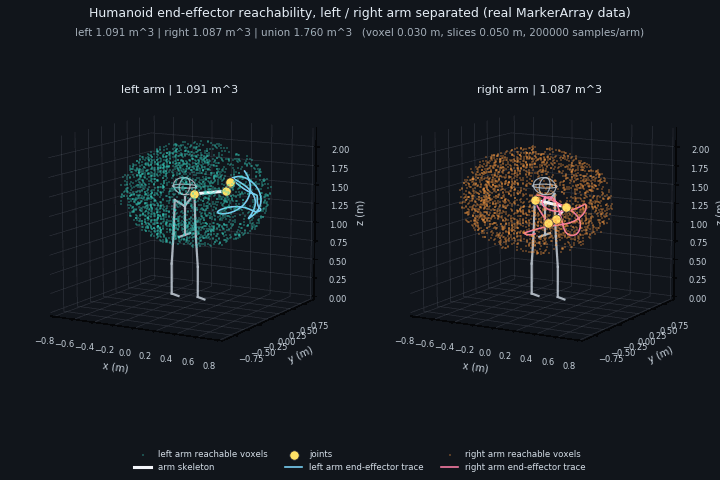

人形机器人双臂末端可达域分析可视化 ROS 2 封装模块
作业概述与背景
本模块实现基于 ROS 2 的 3D 人形机器人关节末端可达域分析。节点为简化人形机器人建立左右两条 7-DoF 手臂运动链（肩 3 + 肘 1 + 腕 3），在关节限位内做均匀随机采样，用正运动学计算末端参考点位置，再以体素栅格统计可达域的体积、包围盒、最大伸展半径与分层切片，并通过 visualization_msgs/MarkerArray 输出体素外壳、切片线框、包围盒、示例骨架、静态参考骨架与在线末端轨迹。
模块不依赖 URDF 与 TF，仅使用代码内置的连杆长度与关节限位，可在无仿真环境的虚拟机中独立运行验证。
运行环境
- 操作系统：Ubuntu 22.04（VMware 虚拟机）
- ROS 2 版本：Humble
- 依赖：
rclcpp、std_msgs、geometry_msgs、visualization_msgs、Eigen3
核心代码文件清单
src/
└── humanoid/
└── humanoid_reachability/
├── include/
│ └── humanoid_reachability/
│ ├── kinematics.hpp # 臂模型、关节限位与正运动学声明
│ └── workspace_analyzer.hpp # 体素栅格、切片与统计结构
├── src/
│ ├── main.cpp # 主节点：采样、统计、话题与 MarkerArray
│ ├── kinematics.cpp # 正运动学、随机采样与限位检查
│ ├── workspace_analyzer.cpp # 体素插入、表面体素、切片与体积统计
│ └── arm_demo_node.cpp # 正弦关节角演示节点（/demo_joint_angles）
├── launch/
│ └── main.launch.py # 一键启动两个节点
├── config/
│ └── params.yaml # 采样数、体素分辨率、发布频率
├── rviz/
│ └── reachability.rviz # RViz2 可视化配置
├── resource/ # 资源目录（无后缀空文件）
├── CMakeLists.txt
├── package.xml
└── README.md
可达域分析原理
- 简化臂模型。 每条手臂为 7 个旋转关节的刚性链：肩点位于
(0, ±0.20, 1.42)，上臂 0.30 m、前臂 0.28 m、腕点到末端参考点 0.10 m。坐标约定为 x 前、y 左、z 上，world原点位于双脚之间的地面。 - 关节限位。 肩 pitch ±120°、肩 roll -20～170°、肩 yaw ±85°、肘 0～145°、腕 roll ±90°、腕 pitch ±70°、腕 yaw ±45°。
- 正运动学。 从肩点起依次串联各关节的旋转与平移，得到肩点、各关节原点与末端参考点的世界坐标。
- 关节空间采样。 每臂在 7 维关节限位内均匀随机采样（默认 200000 点，随机种子 2026，结果可复现）。
- 体素统计。 末端点落入边长 0.03 m 的体素栅格：
- 体积 = 占用体素数 × 单个体素体积；
- 表面体素 = 26 邻域内至少缺一个邻居的体素，用于绘制外壳；
- 最大伸展半径 = 末端点到对应肩点的最大距离；
- 分层切片 = 按 0.05 m 沿 z 分带，统计每层占用体素数、x/y 范围与面积估计；
- 并集体积 = 左右臂体素取并集，重叠区域只计一次。
- 可视化输出。 每条
MarkerArray共 15 个标记：左右体素壳（CUBE_LIST，超过 2500 个后等间隔抽稀）、左右切片线框、左右包围盒、左右体积文字、示例双臂骨架、关节球、左右末端轨迹、末端标记，以及躯干/骨盆/下肢静态参考骨架（LINE_LIST）与头部半透明球（SPHERE，动图中以三向线框绘制）。首帧还会额外带 1 个DELETEALL标记用于清理上一次运行残留，之后稳定为 15 个。
运行步骤
- 新建工作空间并进入
src：
mkdir -p ~/ros2_ws/src
cd ~/ros2_ws/src
- 从 ros2 仓库拷贝模块代码：
cp -r ~/ros2/src/humanoid/humanoid_reachability ~/ros2_ws/src/
cd ~/ros2_ws
- 安装依赖、编译并部署环境：
source /opt/ros/humble/setup.bash
rosdep install --from-paths src --ignore-src -r -y
colcon build --packages-select humanoid_reachability
source install/setup.bash
- 启动节点（节点立即进入 spin，工作空间计算由 1 ms one-shot timer 触发，采样约 21 s，此间不发布 MarkerArray）：
ros2 launch humanoid_reachability main.launch.py
- 另开终端查看统计结果：
source install/setup.bash
ros2 topic echo /humanoid_reachability/reachable_volume
ros2 topic echo /humanoid_reachability/reachability_stats
- 可选：打开 RViz2 查看 MarkerArray（本虚拟机因 OGRE/llvmpipe 崩溃无法打开，见“运行效果”）：
ros2 run rviz2 rviz2 -d ~/ros2_ws/install/humanoid_reachability/share/humanoid_reachability/rviz/reachability.rviz
话题与参数
| 话题 | 类型 | 说明 |
|---|---|---|
/demo_joint_angles |
std_msgs/msg/Float64MultiArray |
输入：左臂 7 + 右臂 7 个关节角（rad） |
/humanoid_reachability/reachable_workspace |
visualization_msgs/msg/MarkerArray |
15 个标记：体素壳、切片、包围盒、骨架、轨迹、参考骨架 |
/humanoid_reachability/reachable_volume |
std_msgs/msg/Float64MultiArray |
[左臂体积, 右臂体积, 双臂并集体积]（m³） |
/humanoid_reachability/reachable_bounds |
std_msgs/msg/Float64MultiArray |
左右臂包围盒，各 6 个值（xmin, xmax, ymin, ymax, zmin, zmax） |
/humanoid_reachability/reachability_stats |
std_msgs/msg/String |
采样数、体素、表面体素、体积、最大半径、包围盒汇总 |
/humanoid_reachability/demo_end_effector_left |
geometry_msgs/msg/PointStamped |
演示姿态下左臂末端参考点 |
/humanoid_reachability/demo_end_effector_right |
geometry_msgs/msg/PointStamped |
演示姿态下右臂末端参考点 |
命名约定：主节点（节点名 humanoid_reachability，可执行文件 humanoid_reachability_node）的输出全部使用 ~/ 私有命名空间（实际解析为 /humanoid_reachability/...）。~/ 按节点名解析，重命名节点（如 name:=reach_left）后多个实例互不抢占话题，也方便 remap；/demo_joint_angles 有意保持绝对路径，用于 arm_demo_node 与主节点之间松耦合，两个节点可以各自替换或单独启动。
| 参数 | 默认值 | 说明 |
|---|---|---|
samples_per_arm |
200000 | 每臂关节空间采样次数 |
voxel_resolution |
0.03 | 体素边长（m） |
slice_height |
0.05 | 高度切片厚度（m） |
random_seed |
2026 | 随机种子 |
max_display_voxels |
2500 | 单臂表面体素显示上限，超出后抽稀；设为 0 表示不限制，负值视为参数错误（节点报错退出） |
publish_rate |
2.0 | 统计与 MarkerArray 发布频率（Hz） |
publish_hz |
20.0 | 演示节点关节角发布频率（Hz） |
period |
8.0 | 演示轨迹周期（s） |
amplitude_scale |
0.35 | 演示振幅相对关节限位半幅的系数 |
以上参数只在 config/params.yaml 定义一处，launch 仅通过 params_file 加载，不再做硬编码覆盖；需要临时调整时请修改 yaml，或在单独启动节点时用 --ros-args -p 参数名:=值。
运行效果
默认参数（每臂 200000 点、体素 0.03 m、切片 0.05 m、种子 2026）在该虚拟机上实测：
- 双臂采样耗时 20.78 s；
- 左臂：占用体素 40409（表面 25139），体积 1.091 m³，包围盒 x[-0.690, 0.690] y[-0.480, 0.900] z[0.720, 2.100]，最大伸展半径 0.680 m；
- 右臂：占用体素 40252（表面 25149），体积 1.087 m³，包围盒 x[-0.690, 0.690] y[-0.900, 0.480] z[0.720, 2.100]，最大伸展半径 0.680 m；
- 双臂并集体积 1.760 m³，重叠体素 15480（约 0.418 m³，占单臂体素 38.3%），说明正前方存在较大的双臂共享作业空间；
/humanoid_reachability/reachable_workspace的 15 个标记中，左右体素壳分别抽稀到 2286 / 2287 个立方体，切片各 28 层（140 个点），轨迹各 300 点。
需要说明包围盒的口径：/humanoid_reachability/reachable_bounds 与 MarkerArray 使用的是占用体素的外沿（体素中心 ± 半个体素，即 ±0.015 m），不是采样点的原始极值。因此左臂 y 上限为 0.900 m，比“肩点 0.20 m + 最大伸展半径 0.680 m = 0.880 m”多出约半个体素；x 上限 0.690 m 同理。这是体素统计的离散外扩，与最大伸展半径并不矛盾。

动图中左右臂各占一个面板：青绿色为左臂可达域体素壳、橙色为右臂，灰色为躯干/骨盆/下肢静态参考骨架与头部线框球，白色为当前演示姿态的双臂骨架，黄色为关节球，青色/橙色曲线为末端轨迹。
说明：该 VMware 虚拟机的 RViz2 在 llvmpipe 软渲染下启动即崩溃（
OGRE::UnimplementedException: pack to PF_UNKNOWN与AxisAlignedBox::setExtents断言），因此无法提供 RViz2 截图。上图由节点实际发布的 MarkerArray 数据在虚拟机内用 matplotlib Agg 后端离线渲染（24 帧、720×480），并非示意性绘图。
验证范围说明
本模块已在该虚拟机上完成以下验证：
- 干净工作空间编译通过：
Finished <<< humanoid_reachability [11.5s]，Summary: 1 package finished； - 两个节点正常启动，初始化（含采样与统计输出）耗时
20.82 s，其中双臂采样20.78 s，之后开始周期性发布话题； /humanoid_reachability/reachable_volume、/humanoid_reachability/reachable_bounds、/humanoid_reachability/reachability_stats数值与 launch 日志一致；/humanoid_reachability/reachable_workspace除首帧 1 个DELETEALL外，持续发布 15 个结构合法的标记，命名空间、frame_id=world、点集数量均已校验；- 左右臂末端坐标（
/humanoid_reachability/demo_end_effector_left、/humanoid_reachability/demo_end_effector_right与 300 点轨迹）随演示关节角连续变化；包围盒、体积与切片在采样阶段一次算出，运行期间保持不变。
未完成 RViz2 人工视觉确认（原因见上）；动图由真实 MarkerArray 数据离线渲染，不含手工绘制的示意内容。机器人本体为程序内置的简化刚性臂链，不是 URDF 模型，也未包含碰撞体与自碰撞检测。
已知限制
- 手臂为简化刚性链，未建模躯干、头部碰撞与自碰撞，也未加入肩部/肘部耦合约束；
- 均匀随机采样在高维关节空间存在覆盖盲区：200000 点分摊到 40409 个占用体素，平均每体素只有约 4.9 个采样点，表面体素占比 62%（25139/40409），说明采样密度不足以把体素填满，体积会随采样数增加而变化；
- 体积按“占用体素数 × 体素体积”得到，整格计数会让边缘略微外扩，采样不足又会漏掉部分区域，因此既不是严格上界也不是严格下界，只是离散估计，分辨率越细越接近真实可达域；
- 右臂由左臂几何镜像得到，未建模左右侧实际差异；
- 末端参考点固定为腕点沿局部 x 轴 0.10 m 处，未建模手指与工具；
- 静态参考骨架（躯干、骨盆、下肢、头部）仅用于空间参照，不参与可达域计算；
- 初始化约 20 s 期间单线程执行器被占用，
/demo_joint_angles的订阅回调同样被阻塞，深度 10 的队列会在初始化结束后集中补发旧帧；初始化完成时已清空traces_并将demo_q_重置到关节中位，轨迹从初始化完成后重新累计，但补发的旧帧仍可能造成短暂跳动。